Labour Supply
EC306- Wages and Employment
Justin Smith
Wilfrid Laurier University
Fall 2026

Goals of This Section
Goals of This Section
In this section we will:
- Build market labour supply from individual choices
- Build the labour supply model and derive the supply curve
- Look at evidence on how responsive labour supply is to wages
- Apply the model to situations workers face
Supply in the Labour Market
Why We Supply Labour
- Almost everything we enjoy as consumers has to be bought
- Consuming goods and services requires income
- For most people, income requires a job
- So labour supply is derived from wanting to consume
- We sell labour services to get the income that pays for consumption
- The basic model assumes work itself yields no utility
- Utility comes only from what the wage lets you buy
- Not literally true, but it keeps the first model clean
Leisure and Nonmarket Time
Key Definition
Nonmarket time: all time not sold to an employer — not just fun, but chores, cooking, cleaning, education, and other unpaid production
- We will say leisure as shorthand for all of it
- The phrasing goes back to Robbins (1930) and stuck in the literature
- Worth flagging, because “leisure” makes it sound like the beach
- Time is limited, so leisure is never free
- Every hour of leisure is an hour not earning
- The opportunity cost of leisure is the wage
Two Decisions
- Labour supply is really two separate choices
Note
- Extensive margin: whether to work at all
- Intensive margin: how many hours, once you do
- The extensive margin is governed by the reservation wage
- The lowest wage that gets you to work even a small amount
- The intensive margin is not so tidy
- A higher wage pulls hours in two opposing directions
- Theory alone cannot say which one wins
From Individual to Market Supply
- Every individual has their own labour supply curve
- To get the market, we add them up
- Focus on a homogeneous group of workers
- Same skills and effort offered to employers
- Keeps us comparing like with like
- At each wage, sum the hours all potential employees will supply
Key Definition
Market labour supply curve: the total hours all potential workers are willing to supply at each wage rate
Building a Market Supply Curve
- Survey two typical students, Robin and Sam, in a neighbourhood of 10,000
- Take each to represent 5,000 students
| Wage | Robin | Sam | Combined | Market (×5,000) |
|---|---|---|---|---|
| $10 | 4 | 10 | 14 | 70,000 |
| $20 | 15 | 25 | 40 | 200,000 |
| $30 | 25 | 35 | 60 | 300,000 |
| $40 | 30 | 40 | 70 | 350,000 |
| $50 | 33 | 43 | 76 | 380,000 |
- Both individuals slope up, so the market curve does too
iClicker Question
Which of the following is a change on the extensive margin of labour supply?
A) A nurse picks up two extra shifts a month after a pay raise
B) A retired teacher returns to part-time tutoring when tutoring rates rise
C) A student cuts back from 20 to 12 hours a week during exams
D) A full-time worker starts refusing overtime
E) A contractor raises her hourly rate
Labour Supply Model
Introduction
- In this section we introduce a model we use throughout the course
- The model helps us understand how individuals make decisions about work
- Based on utility maximization as you saw in EC270
- Individual choose between two goods
- Consumption of goods and services
- Leisure
- Choices are constrained by time, wage rate, and non-labour income
- There are a few wrinkles that make this market unique
Preferences
- Individuals have preferences over consumption (C) and leisure (L)
- People like consuming goods and services
- Also like having non-work time
- Includes fun activities but also non-work tasks like chores, education, etc.
- The tradeoffs people are willing to make between C and L are represented by indifference curves
- At every point along the curve the individual is equally happy
- Curves further from the origin represent higher levels of utility
Preferences
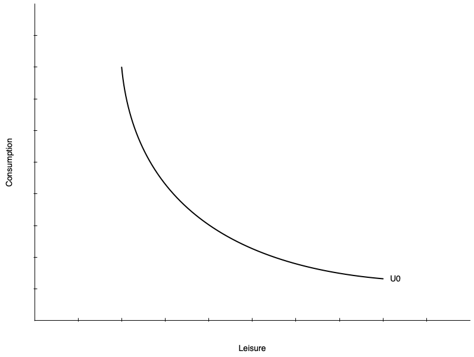
- On the left is a single indifference curve
- Any point represents equal utility (\(U_{0}\))
Key Definition
Marginal Rate of Substitution (MRS): the rate at which a person is willing to trade consumption for leisure while remaining equally happy
- The MRS is the slope of the indifference curve at a point
- Individuals have diminishing MRS
- Willing to give up less consumption for additional leisure the more leisure they already have
- Slope gets shallower with more leisure
Preferences
- Indifference curves do not have to be smooth curves like the one shown
- Could be straight lines
- Means the tradeoff between consumption and leisure is constant
- Willingness to trade away leisure for consumption does not depend on leisure
- Could be “L” shaped
- Consumption and leisure must be consumed in fixed proportions
- Mostly we will deal with smooth preferences
Preferences
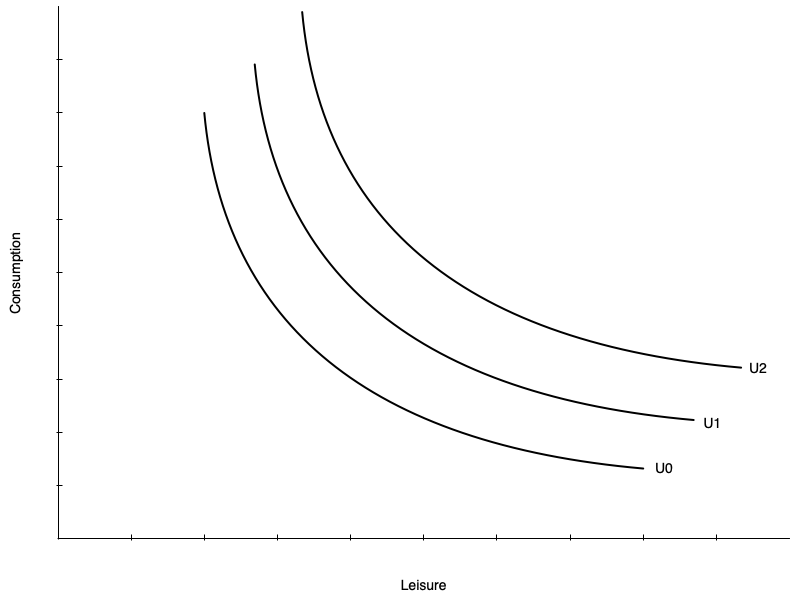
- Utility increases with curves further from the origin
- \(U_{2} > U_{1} > U_{0}\)
Preferences
- We cannot compare utility levels across two people
- Nothing says A’s \(U_{1}\) is more happiness than B’s \(U_{1}\)
- We can compare the MRS at the same bundle
- Take one consumption-leisure bundle \(J\) and hand it to individual A and individual B
- A’s curve is steeper through \(J\), so A has the higher MRS there
- A values an extra hour of leisure more than B does at that point
- Moving A from \(L_{0}\) to \(L_{1}\) takes more consumption than moving B the same distance
- This is how differing tastes for leisure get into the model
- Whatever makes non-work time valuable, like unpaid work at home, shows up in the MRS
Constraints
- Individuals do not choose consumption and leisure bundles on preference alone
- They are constrained by their budget
- The budget is determined by
- The wage rate
- Total number of hours available
- Non-labour income
- Budget constraint is also called
- Potential income constraint
- Full income constraint
Constraints
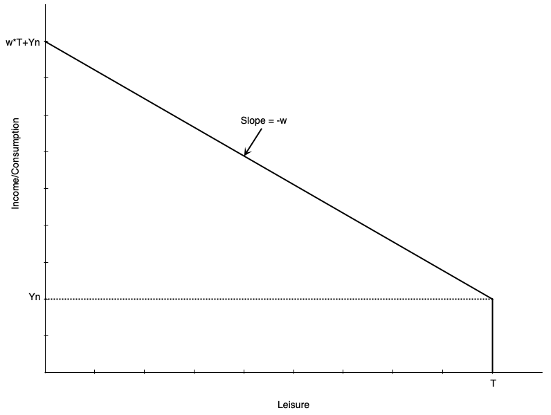
- Graph shows a linear budget constraint
- Assume no saving, so consumption = income
- There are \(T\) total hours to allocate to work or leisure
- Individual earns \(Y_{n}\) non-labour income
- Earned even with zero work hours (full leisure hours)
- Each hour worked gets wage of \(w\)
- Person working \(T\) hours (no leisure) earns \(wT+Y_{n}\) income
- Called "full income"
Constraints
- Mathematically, the budget constraint is
\[C = w(T - L) + Y_{n}\]
- Consumption is equal to income from working \((w(T - L))\) plus non-labour income \((Y_{n})\)
- The slope of the budget constraint is \(-w\)
- The opportunity cost of leisure is the wage rate
- Each hour of leisure means one less hour worked, which means \(w\) less income
- Someone who works zero hours has \(T\) leisure hours and \(Y_{n}\) consumption
- Someone who works \(T\) hours has zero leisure hours and \(wT + Y_{n}\) consumption
Constraints
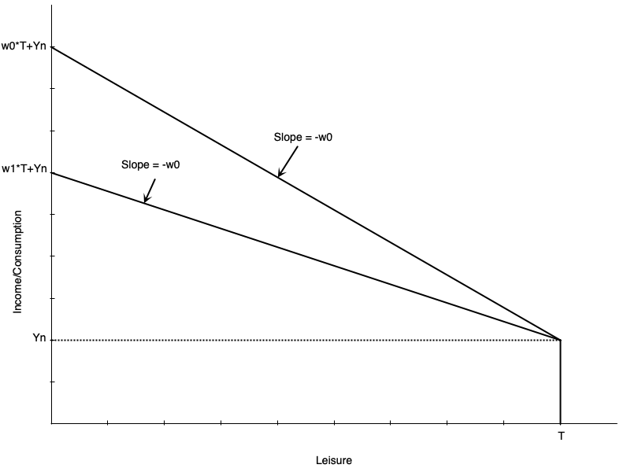
- Slope is the negative of the wage rate \(w\)
- A lower wage means shallower slope
- If \(w_{1} < w_{0}\), the budget line swivels down
- They intersect at leisure = \(T\) because there are no work hours
- Lower wage also means full income is lower
- Working all hours leads to less total labour earnings
Constraints
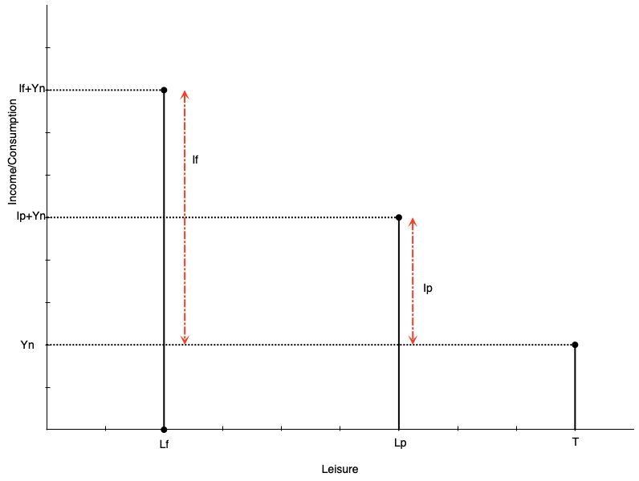
- Often people cannot adjust their work hours freely
- They may only be able to work full time or part time
- Budget constraint is no longer a line, but a set of points
- Suppose an individual chooses part time work
- Work hours are \(h_{p} = T-L_{p}\)
- Labour earnings are \(I_{p} = w*h_{p}\)
- Total consumption (and income) is \(C_{p} = I_{p} + Y_{n}\)
Constraints
- A person working full time hours
- Work hours are \(h_{f} = T-L_{f}\)
- Labour earnings are \(I_{f} = w*h_{f}\)
- Total consumption (and income) is \(C_{f} = I_{f} + Y_{n}\)
- In theory wage could also be different for full time work
Constraints
- The potential income constraint does not have to be a straight line
- A straight line assumes every extra hour pays the same \(w\)
- That fails for the self-employed — think of a doctor or a lawyer
- They sell the output they produce, not their hours
- Income is a function of hours worked, \(I = F(h)\)
- Past some point they run into diminishing marginal productivity
- Each extra hour adds less output than the one before it
- So the constraint curves, flattening out as work hours rise
- The wage here is what the market pays for an hour’s worth of what they produce
- Nothing about the model changes — the optimum is still a tangency
- It is only harder to work with algebraically
iClicker Question
A worker’s employer cuts the wage from $25 to $20 per hour. Which point on the budget constraint does not move?
A) The full-income point, where leisure is zero
B) The zero-work point, where leisure = \(T\) and consumption = \(Y_{n}\)
C) The current optimum
D) Every point on the constraint moves
E) None moves individually — the whole line shifts down in parallel
Consumer Optimum
- Work hours are chosen using the combination of preferences and constraints
- The consumer optimum is the point that maximizes utility subject to the budget constraint
- The optimum occurs where the budget constraint is tangent to an indifference curve
Note
There are two possibilities for the optimum:
- Non-participation: optimum occurs at the end of the budget constraint (full leisure) — a corner solution
- Participation: optimum occurs at an interior point (some leisure, some work) — an interior solution
- Model also defines the reservation wage
- Lowest wage rate at which a person will choose to work
Consumer Optimum
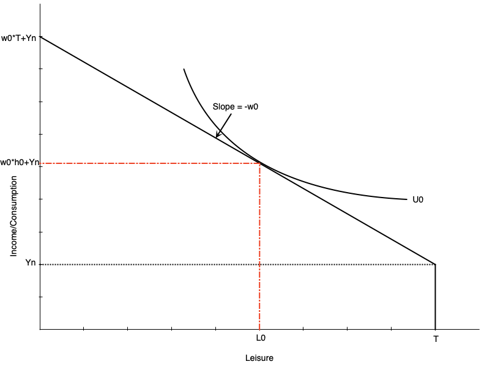
- Graph shows an optimum with participation
- Optimum is where indifference curve is tangent to budget constraint
Tip
At the optimum, MRS = wage rate
- Willingness to trade leisure for consumption (MRS) equals ability to trade them (wage)
- Optimal work hours are \(h_{0} = T - L_{0}\)
- Optimal consumption is \(C_{0} = W_{0}h_{0}+Y_{n}\)
Consumer Optimum
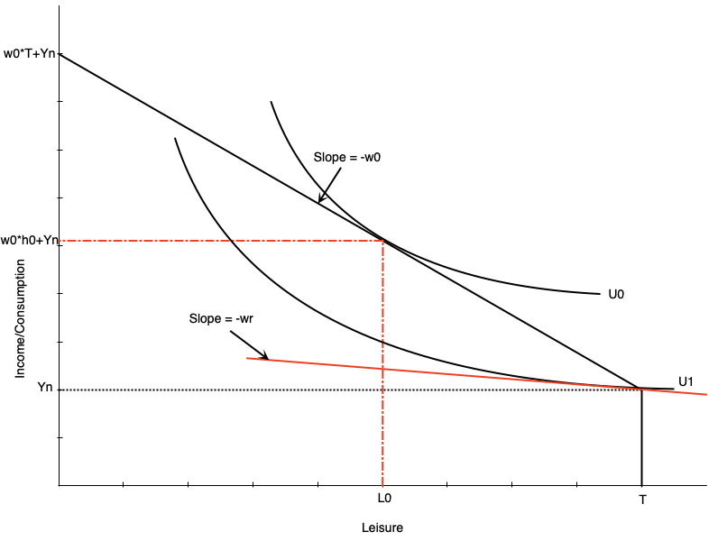
Key Definition
Reservation wage: the lowest wage at which a person will choose to work
- It occurs where the budget constraint is tangent to the indifference curve at full leisure
- At that point, MRS = reservation wage
- If the wage is any lower, the person will choose not to work
- If it is any higher, they will work positive hours
- The red line shows the hypothetical reservation wage
- In this case, it is \(w_{r}\)
Consumer Optimum
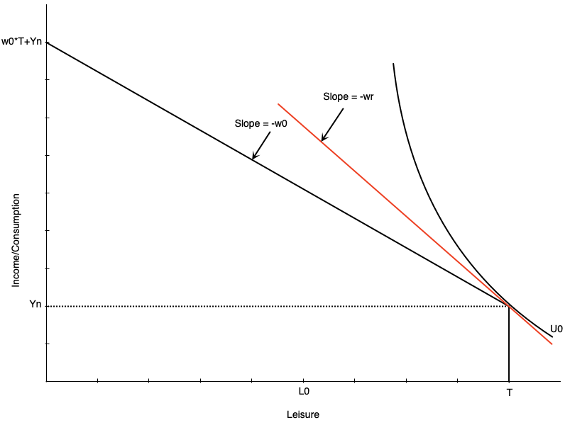
- Graph to the left shows a non-participation optimum
- The slope of the indifference curve is steeper than the budget constraint at full leisure
- The extra consumption you want from one less hour of leisure (MRS) is more than you can get from working an hour (wage)
- So your optimal choice is to not work at all
- Indifference curve touches the budget constraint at the kink
- Notice the wage \(w_{0}\) is lower than the reservation wage \(w_{r}\)
iClicker Question
A person receives a large inheritance, substantially increasing their non-labour income. Leisure is a normal good. What happens to their reservation wage?
A) It rises — the value of their time at home goes up, so they are less likely to participate
B) It falls — with more income they need less from a job, so they will accept a lower wage
C) It is unchanged — the reservation wage is determined by the market wage
D) It is unchanged — non-labour income shifts the budget constraint without changing its slope
E) It rises, but only if they were already employed
Comparative Statics
Introduction
- The model can be used to predict how changes in the environment affect work decisions
- Changes could be to the wage or non-labour income
- Often these arise because of policy changes
- Introduction or increase in welfare payment
- Wage subsidy
- Tax credits
- Employment insurance
- Child care
- We can examine these change with our model
Increase in Non-Labour Income
- Suppose that individuals receive an increase in non-labour income
- Could be from a government transfer program
- How does this affect optimal work hours?
- Depends on whether leisure is a normal or inferior good
- Normal good: leisure increases when non-labour income increases
- Inferior good: leisure decreases when non-labour income increases
- Generally economists think of leisure as normal
Increase in Non-Labour Income
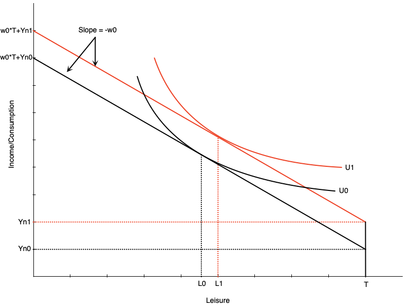
- Graph shows an increase in non-labour income from \(Y_{n0}\) to \(Y_{n1}\)
- Budget line shifts up vertically but parallel
- No change in slope because wage is the same
- If leisure is a normal good, optimal leisure increases from \(L_{0}\) to \(L_{1}\)
- Means work hours decrease by the same amount
- Consumption also increases
- This illustrates a pure income effect
- Increases in income increase demand for normal goods
Increase in the Wage
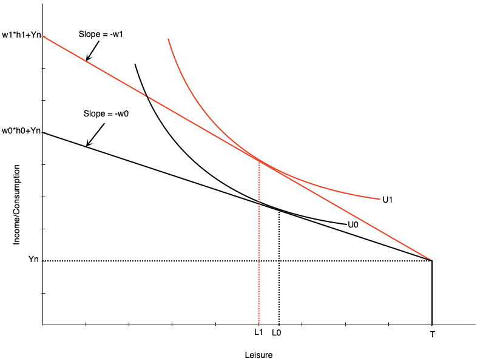
- If the wage changes, the budget constraint pivots
- In graph to the left, the wage increases from \(w_{0}\) to \(w_{1}\)
- The slope becomes steeper
- Full income also increases because working all hours earns more
- Graph is drawn such that leisure falls from \(L_{0}\) to \(L_{1}\) at the new wage rate
- There are two effects underlying this change
- Substitution effect
- Income effect
Increase in the Wage
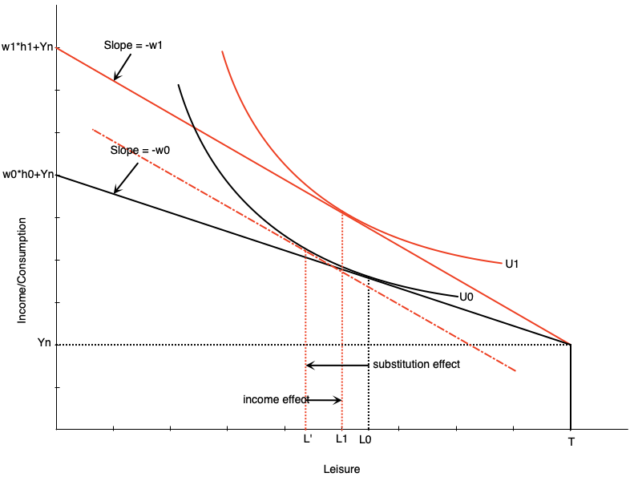
Key Definition
Substitution Effect: change in leisure when wage changes but utility is held constant
- When wage increases, leisure becomes more expensive
- People substitute away from leisure and towards consumption
- To measure this, draw a hypothetical budget line with the new slope but tangent to the original indifference curve
- Difference in leisure measures substitution effect
Increase in the Wage
Key Definition
Income Effect: change in leisure when income changes but wage is held constant
- When wage increases, workers become richer at same hours of work
- Want to consume more of all normal goods
- To measure this, move from hypothetical budget line to new budget line
- Difference in leisure measures income effect
Increase in the Wage
- The income and substitution effects move in opposite directions
- For a wage increase
- Substitution effect encourages more work (less leisure)
- Income effect encourages less work (more leisure)
- The overall effect on work hours depends on which effect is stronger
- Graph on the left shows a stronger substitution effect
Evidence from Taxi and Uber Drivers
- Theory will not say which effect wins, so we need workers who really do pick their hours
- The self-employed do, which is why cab drivers keep turning up here
- A cold, rainy day in New York is a high-wage day — is it a good day to knock off early?
- Early studies said yes: hours fell when returns rose, so the income effect was winning
- But they built the wage by dividing earnings by hours, which biases the estimate
- Farber redid it on complete records of New York taxi trips, 2009 to 2013
- Fix the wage measure and the elasticities turn positive — better day, longer hours
- Uber is a cleaner test, because surge pricing moves the wage hour by hour
- Chen and coauthors find very large short-run elasticities, a strong substitution effect
- Source: Farber (2015); Chen et al. (2019)
Increase in the Wage
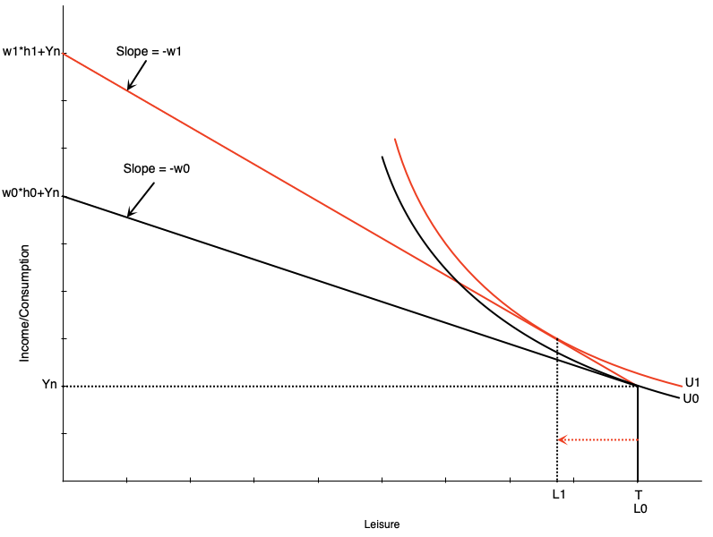
- Changing the wage can also affect participation
- Recall that workers do not work if the wage is below their reservation wage
- If an increase in the wage moves it above the reservation wage, they will start working
- Graph to the left shows how this would happen
iClicker Question
A worker earning $20/hour gets a raise to $25/hour and chooses to work fewer hours per week. Which must be true?
A) The income effect outweighs the substitution effect
B) The substitution effect outweighs the income effect
C) Leisure must be an inferior good for this worker
D) The wage must be below their reservation wage
E) The worker is behaving irrationally — hours should rise with the wage
The Individual Labour Supply Curve
- The labour supply curve shows the relationship between the wage rate and hours worked
- It is derived from the consumer optimum at different wage rates
- We will see that the labour supply curve can be backward bending
- It is upward sloping when the substitution effect is stronger
- It is downward sloping when the income effect is stronger
- The curve tends to bend backwards at higher wage rates
The Individual Labour Supply Curve
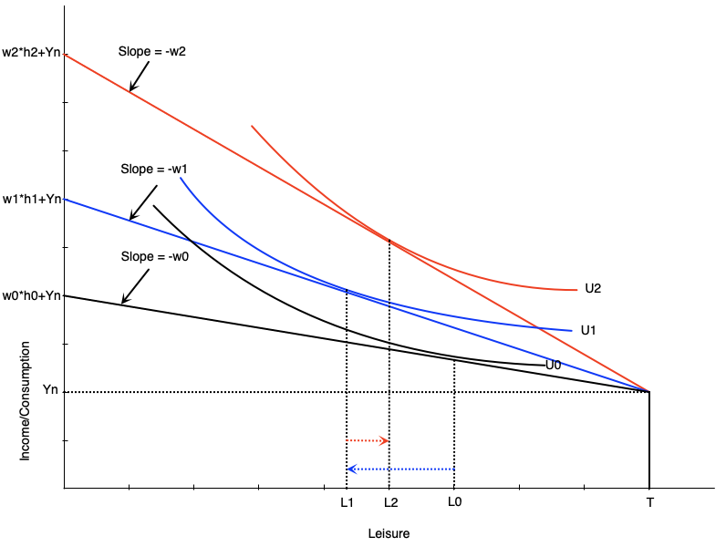
- Suppose wage goes from \(w_{0}\) to \(w_{1}\) to \(w_{2}\)
- At \(w_{0}\), work hours are \(h_{0} = T - L_{0}\)
- At \(w_{1}\), work hours increase to \(h_{1} = T - L_{1}\)
- substitution effect stronger
- At \(w_{2}\), work hours decrease to \(h_{2} = T - L_{2}\)
- income effect stronger
The Individual Labour Supply Curve
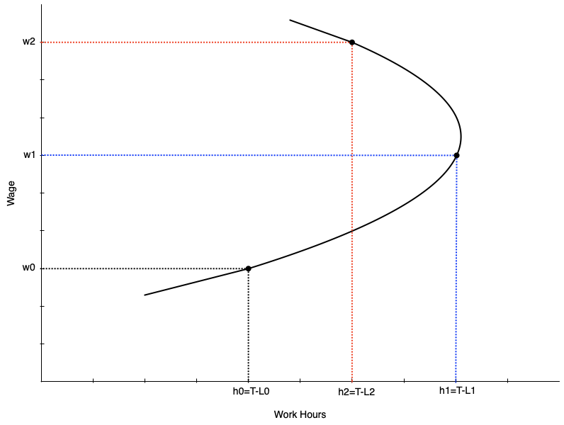
The Individual Labour Supply Curve
- The text runs the numbers for one person with $10 of non-labour income
| Wage | Hours/day | Earnings | Total income |
|---|---|---|---|
| $6 | 0 | $0 | $10 |
| $8 | 8 | $64 | $74 |
| $10 | 12 | $120 | $130 |
| $14 | 10 | $140 | $150 |
- At $6 the wage sits below the $7 reservation wage, so hours are zero
- From $8 to $10 the substitution effect dominates and hours rise
- At $14 the income effect dominates and the curve bends back
Summary
- We have used the labour supply model to examine changes in the wage
- For people participating, wage changes alter leisure and work hours
- If the wage goes up then
- Work hours go up if the substitution effect is strongest
- Work hours go down if the income effect is strongest
- For non-participants, a wage increase can induce them to enter the labour force
- If the wage goes above their reservation wage
- The labour supply curve maps different wages to work hours
- It slopes up at lower wages, but can bend backwards at higher wages
iClicker Question
Doctors, lawyers, and executives earn high wages and often work very long hours. Does this contradict the backward-bending labour supply curve?
A) No — the curve describes how one person responds to a change in their own wage, not how hours compare across different people
B) Yes — it shows the income effect never dominates the substitution effect
C) No — it shows the substitution effect always dominates at high wages
D) Yes — labour supply must therefore slope upward throughout
E) No — high earners have less non-labour income, so they must work more
Empirical Evidence
Introduction
- There are many labour economists working on evidence of these theories
- We will look at a few examples of empirical evidence on labour supply
- First we look at evidence on participation
- The extensive margin of labour supply
- Many studies look specifically at married women
- Then at evidence on work hours
- The intensive margin of labour supply
Participation
- Table below shows participation rates for married women
- Broken down by age, age of youngest child at home, and education
- Each of these demographic factors are related to wage
- e.g. higher education -> higher wage
- We expect to see that where wage is higher, participation is also higher
Warning
This is not a perfect way to examine this relationship — there could be other related factors that drive participation
Participation
Elasticity of Labour Supply
Key Definition
Elasticity of labour supply: the percentage change in labour supply from a 1% change in the wage
- Measures how responsive work hours are to changes in the wage
- There are different ways of measuring elasticity
- Uncompensated Elasticity: measures total change in work hours from a wage change
- Includes both income and substitution effects
- Effect is theoretically ambiguous
- Compensated Elasticity: measures change in work hours after removing income effect
- Isolates the substitution effect
- Should be positive
- Uncompensated Elasticity: measures total change in work hours from a wage change
Elasticity of Labour Supply
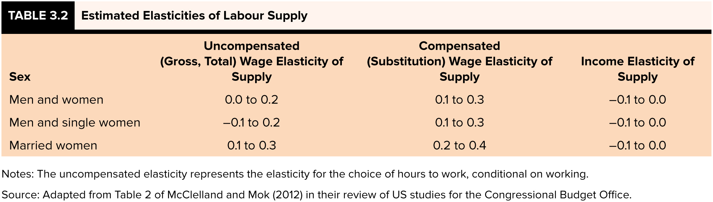
Elasticity of Labour Supply
- The text collects a range of estimates from a review of the literature
| Group | Uncompensated | Compensated | Income |
|---|---|---|---|
| Men and women | 0.0 to 0.2 | 0.1 to 0.3 | −0.1 to 0.0 |
| Men and single women | −0.1 to 0.2 | 0.1 to 0.3 | −0.1 to 0.0 |
| Married women | 0.1 to 0.3 | 0.2 to 0.4 | −0.1 to 0.0 |
- Rows split by marital status, not simply by gender
- Men and single women are assumed to decide on their own
- Married women’s choices are tied to a spouse’s, and to entry costs like child care
- Estimates are inelastic throughout — well under 1 in absolute value
- Compensated elasticity is positive everywhere, as theory requires
- Source: McClelland and Mok (2012), for the Congressional Budget Office
Elasticity of Labour Supply
- Three generalizations come out of this literature
Note
- Overall supply for men and women is slightly upward sloping
- For men it may be slightly backward bending
- For women it is more strongly forward sloping
- Point 2 is the backward-bending case we built earlier
- A negative uncompensated elasticity means the income effect wins
- The effect is small and could plausibly be zero
- Women’s stronger response is a bigger substitution effect
Elasticity of Labour Supply
- Two more generalizations, both about who and when
Note
- Married women’s elasticities have fallen substantially since the 1980s
- Low-income workers are more elastic than high-income workers
- Evidence on the decline: Blau and Kahn (2007), Dostie and Kromann (2013), Morissette and Hou (2008)
- Men’s elasticities went the other way, rising slightly
Warning
These numbers describe responses in the early 2000s, and magnitudes vary a lot across studies — use them with caution
iClicker Question
For men, the uncompensated elasticity of labour supply is estimated at slightly negative to zero, while the compensated elasticity is positive. What does this pair of estimates tell us?
A) The income effect slightly outweighs the substitution effect — supply is mildly backward bending
B) The substitution effect dominates for men
C) The two estimates contradict each other, so at least one must be wrong
D) Men’s labour supply does not respond to wages at all
E) Leisure is an inferior good for men
Applications
Introduction
- We can use the model to analyze various situations faced by workers
- In this section we will look at
- Added worker effects
- Side hustles (holding multiple jobs)
- Overtime
- The list is not exhaustive
- The same reservation wage logic explains discouraged workers, which we covered in Chapter 2
- In the next chapter we will look at government policies
Added Worker Effect
Key Definition
Added worker effect: occurs when a negative income shock to a family leads to increased labour supply from secondary earners
- e.g. husband loses job, wife enters labour force or increases work hours
- Explicitly considers the family unit rather than treating labour supply as purely individual
- Spousal income is treated as a person’s non-labour income
- In the model we can look at what happens when this amount falls
Added Worker Effect
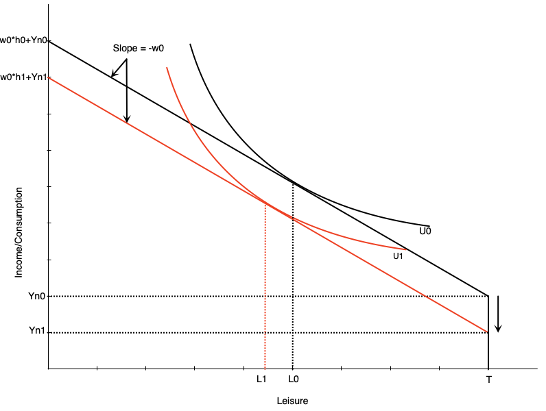
- When non-labour income falls, the budget constraint shifts down
- If leisure is a normal good, optimal leisure falls from \(L_{0}\) to \(L_{1}\)
- Work hours increase from \(h_{0}\) to \(h_{1}\)
- Means that the spouse increases work hours to compensate for lost family income
Added Worker Effect
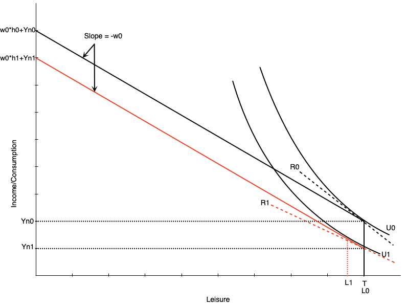
- If the spouse was not already working, the fall in income can induce participation
- Happens because the fall in income reduces the reservation wage
- If the wage is now above the reservation wage, they will start working
- Graph to the left shows how this happens
- The slope of reservation wage \(R_{1}\) is smaller than \(R_{0}\) after the drop in non-labour income
- Person enters the labour market in response because wage is now above reservation wage
Does the Added Worker Effect Show Up in the Data?
- The theory says a spouse’s job loss should pull the other partner toward work — the Canadian evidence says a little, and not for everyone
- Morissette and Ostrovsky tracked families through layoffs in the 1990s
- No added-worker response in the aggregate; a modest one among wives without teenagers at home
- Wives’ earnings made up only about one-fifth of the husband’s earnings loss five years on
- Ferrer, Pan, and Schirle revisit the question with recent data
- Married women do move into employment quickly when a spouse is laid off
- There is no comparable response among men
- Part of the response looks anticipated — families that can see the layoff coming are ready for it
- Source: Morissette and Ostrovsky (2008); Ferrer, Pan and Schirle (2025)
Mortgages and Participation
- The added worker effect starts from a shock nobody planned for
- A mortgage runs through the same channel, except the household signed up for it
- The payment is committed in advance, outside this month’s choices
- So a larger payment behaves like lower non-labour income
- That pushes the reservation wage down and can pull a spouse into work
- Fortin sorted Canadian women in 1986 by the household’s mortgage position
- The closer payments sat to the bank’s limit, the sharper the rise in participation
- As large an effect as two preschool children, pointing the other way
- Del Boca and Lusardi found the same in Italy when mortgage access widened
- The caveat is that buying the house was itself a choice
- Source: Fortin (1995); Del Boca and Lusardi (2003)
Rigid Schedules and Flexible Work Hours
Key Definition
Side hustle: a second job with flexible hours, usually at a lower wage, taken because hours at the main job are fixed
- The older term for the same thing is moonlighting
- From a time when main jobs ran 9-5 and extra work happened after dark
- Hours really are fixed for a lot of people
- In the 2024 LFS, over a third of working Canadians report exactly 40 or 37.5 hours a week
- Someone who wants more hours than the main job allows is underemployed
Rigid Schedules and Flexible Work Hours
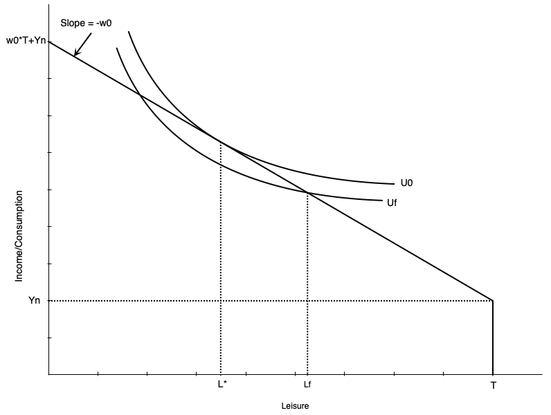
- In this graph people ideally would work \(h^* = T-L^*\) hours
- Maximizes utility subject to budget constraint
- Can only work \(h_f = T- L_f\) hours at their main job
- Employer does not allow more hours
- This puts them on a lower indifference curve \(U_f\)
- The outcome is not optimal
Rigid Schedules and Flexible Work Hours
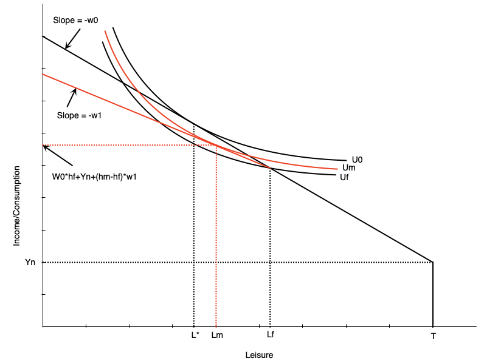
- Now imagine they can take a second job at a lower wage rate
- The budget constraint pivots out from the fixed hours point
- Beyond those hours, the wage falls
- Allows worker to access higher utility curve
- They can increase hours worked
- But not as much as if they could extend hours in main job
iClicker Question
In a recession, a household’s primary earner loses their job while wages fall in the jobs available to the second earner. What does the model predict for the second earner’s participation?
A) The income loss pushes them toward entering, the lower wage pushes them away — the net effect is ambiguous
B) They will certainly enter — the household needs the income
C) They will certainly stay out — the available wage is too low
D) Participation is unchanged, because the two effects cancel exactly
E) The model can say nothing about participation, only about hours
Overtime
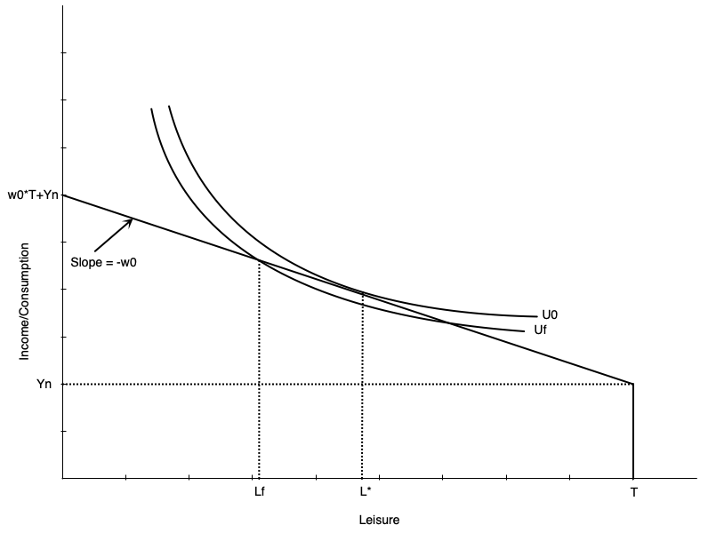
- In this graph, people would ideally work \(h^* = T-L^*\) hours
- Maximizes utility subject to budget constraint
- But employer requires them to work \(h_f = T- L_f\) hours
- Employer does not allow fewer hours
- Puts them on a lower indifference curve \(U_f\)
- They are overemployed — working more than they would choose at that wage
Overtime
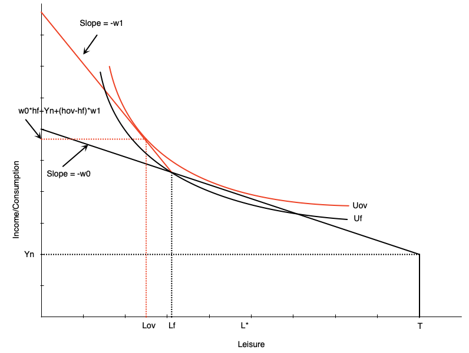
- If the employer offers overtime wages, the budget constraint pivots out from the fixed hours point
- Beyond those hours, the wage increases from \(w_{0}\) to \(w_{1}\)
- Allows worker to access higher utility curve
- Also increases hours worked even though they are initially overemployed
- The higher wage induces a substitution effect to work more
- There is a small income effect that only applies to the extra hours
- The alternative — paying more for all hours — is Review Questions 7 and 8
iClicker Question
Why does an overtime premium raise hours more effectively than an equally costly raise on all hours?
A) The premium changes the return only on marginal hours, so it delivers a substitution effect with almost no income effect
B) An across-the-board raise creates a larger substitution effect
C) The income effect from the premium encourages more work
D) The premium raises full income by more than the across-the-board raise
E) It doesn’t — both change hours by the same amount
Summary
Summary
- We have explored the labour-leisure model for labour supply
- The model is based on utility maximization subject to a budget constraint
- The model can explain both participation and work hours decisions
- Changes in non-labour income and the wage affect work decisions
- The labour supply curve can be backward bending
- The model can be used to analyze various situations faced by workers
- Added worker effects
- Side hustles
- Overtime
- Next chapter we will analyze government policy within this model
References
- Benjamin, D., Foley, K., Gunderson, M., Lemieux, T., Schirle, T., & Skuterud, M. (2026). Labour Market Economics, 2026 Release. McGraw Hill. Chapter 3.
- Blau, F. D., & Kahn, L. M. (2007). Changes in the labor supply behavior of married women: 1980–2000. Journal of Labor Economics, 25(3), 393–438.
- Chen, M. K., Chevalier, J. A., Rossi, P. E., & Oehlsen, E. (2019). The value of flexible work: Evidence from Uber drivers. Journal of Political Economy, 127(6), 2735–2794.
- Del Boca, D., & Lusardi, A. (2003). Credit market constraints and labor market decisions. Labour Economics, 10(6), 681–703.
- Dostie, B., & Kromann, L. (2013). Canadian estimates of married women’s labour supply elasticities.
- Farber, H. S. (2015). Why you can’t find a taxi in the rain and other labor supply lessons from cab drivers. Quarterly Journal of Economics, 130(4), 1975–2026.
- Ferrer, A., Pan, Y., & Schirle, T. (2025). Added worker effects in Canada: The effect of spousal job loss on transitions into employment. Canadian Public Policy.
References (cont.)
- Fortin, N. M. (1995). Allocation inflexibilities, female labor supply, and housing assets accumulation: Are women working to pay the mortgage? Journal of Labor Economics, 13(3), 524–557.
- McClelland, R., & Mok, S. (2012). A review of recent research on labor supply elasticities. Congressional Budget Office Working Paper 2012-12.
- Morissette, R., & Hou, F. (2008). Does the labour supply of wives respond to husbands’ wages? Canadian evidence from micro data and grouped data. Canadian Journal of Economics, 41(4), 1185–1210.
- Morissette, R., & Ostrovsky, Y. (2008). How do families and unattached individuals respond to layoffs? Evidence from Canada. Statistics Canada, Analytical Studies Branch Research Paper No. 304.
- Robbins, L. (1930). On the elasticity of demand for income in terms of effort. Economica, 29, 123–129.